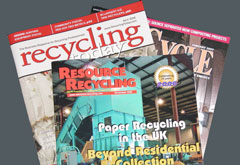

| Home About Us Our Services Experience Contact Us |
|
DSM Publications
The Value Of Recycling: What The Numbers Tell Us (pdf 1.18MB)
Prioritizing Recovery Efforts, Part 2: Opportunities for Increased Beverage Container Recovery (pdf 814K)
Only As Good As Your Garbage (pdf 6MB)
Sorting Out Recycling Rates (pdf 5MB)
Sorting Plastic Bottles for Recycling (pdf 6MB)
It Ain't Hay: Recycling Agricultural Film (pdf 4MB)
'Mining' used to close Rural Landfill (pdf 88K)
Making the Day More Productive (pdf 124K)
Collecting Plastic Bottles More Efficiently (pdf 143K)

|
| PO Box 2 • Windsor, VT 05089 • TEL (802) 674-2840 • FAX (802) 674-6915 • dsm@dsmenvironmental.com |